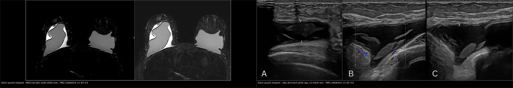
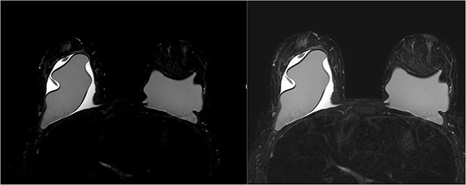
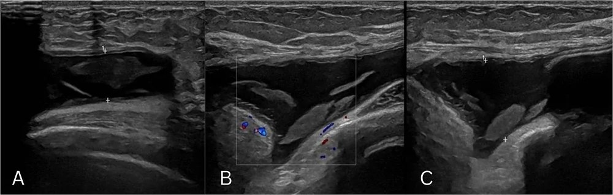
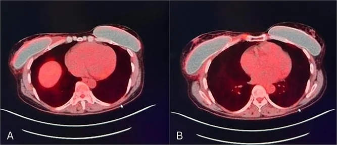

1654 — Dịch quanh implant muộn & u lympho tế bào T liên quan implant (BIA-ALCL) / Late peri-implant effusion and breast implant-associated anaplastic large cell lymphoma
Tags: pattern:dich-quanh-implant pattern:khoi-bao-xo vung:vu score:TNM-BIA-ALCL protocol:MRI-vu protocol:PET-CT protocol:sieu-am-vu incidentaloma:dich-quanh-implant
Mức chắc chắn (certainty): tổng hợp y văn (literature synthesis) — biên từ 6 nguồn toàn văn mở: ca bệnh hai bên có hình ảnh MRI/siêu âm/PET-CT (PMC13668424, CC BY 4.0), tổng quan biến chứng implant (PMC12067747, CC BY-NC 4.0), tổng quan BIA-ALCL (PMC9678239, CC BY 4.0), ca bệnh tế bào học âm (PMC11595676, CC BY 4.0), tổng quan PET/CT và bảng TNM (PMC12734642, CC BY 4.0), nghiên cứu dịch tễ học quốc gia (PMC13158419, CC BY-NC 4.0). Ca trong quiz là ca nguyên văn của PMC13668424 — ghi rõ trong đáp án.
1. Tổng quan — vì sao dịch "quanh implant" lại là dấu hiệu phải loại trừ ung thư
- Bản chất bệnh học: BIA-ALCL là u lympho tế bào T ngoại vi, CD30 dương mạnh, ALK âm, phát sinh trong dịch quanh implant hoặc bao xơ. Vỏ implant nhám (textured) làm tăng diện tiếp xúc và màng sinh học (biofilm), tạo viêm mạn tính → tăng sinh tế bào T và tích lũy đột biến. Bệnh thường một bên, nhưng hai bên đồng thời vẫn xảy ra (ca trong bài).
- TẠI SAO biểu hiện lại là "dịch muộn": bao xơ quanh implant có lớp lót giống màng hoạt dịch, tiết dịch và hấp thu qua bạch mạch. Khi có viêm/ác tính, dịch tích tụ trong khoang kín — bệnh nhân thấy sưng, căng, đau âm ỉ nhiều tháng, không sốt. Tế bào u bong vào dịch, nên chọc hút dịch là sinh thiết lỏng — đây là điểm mấu chốt của toàn bộ quy trình.
- TẠI SAO hình ảnh phản ánh được: dịch là nước → siêu âm trống âm, MRI T2 rất sáng, CT khoảng 0–20 HU; trên DWI dịch tự do không hạn chế khuếch tán (ADC cao), còn khối u đặc hạn chế khuếch tán (ADC thấp). Khi có mảnh vụn tế bào/fibrin → dịch "phức tạp", có echo trong lòng, vách, không tăng sinh mạch. Khối u trong bao là mô đặc → echo dày, ngấm thuốc, hạn chế khuếch tán. Vì vậy siêu âm là phương thức đầu tay để phát hiện dịch/khối và hướng dẫn chọc hút.
- Số liệu nằm lòng:
- Seroma muộn (sau 1 năm) gặp ở 0,8–1,8% bệnh nhân đặt implant (PMC12067747).
- BIA-ALCL trong đoàn hệ 10.339 phụ nữ Đan Mạch: 2,83/100.000 người–năm (95% CI 0,77–7,26) ở implant textured thẩm mỹ; 3,44/100.000 (0,09–19,16) ở nhóm tái tạo; theo dõi trung vị 17,3–17,4 năm (PMC13158419). Ước tính dao động rộng giữa các nghiên cứu vì khác mẫu số (số implant được theo dõi), thời gian phơi nhiễm và cách ghi nhận — không dùng một con số để tư vấn nguy cơ tuyệt đối cho từng người.
- FDA ghi nhận 1.130 ca và 31 tử vong trên toàn cầu (tính đến 2022) (PMC12067747).
- Thời gian tiềm tàng trung bình 7–10 năm sau đặt implant; sống sót 97,9% khi không có hạch, giảm còn 75% khi có di căn hạch (PMC9678239).
- Trong ca nguyên văn: nữ 51 tuổi, sưng vú phải 6 tháng, đặt implant 20 năm trước và sửa lại 3 năm trước; dịch 20 mL đục, tế bào ác tính, CD30+/ALK−, hai bên, T3N0M0 — giai đoạn IC (PMC13668424).
2. Mẫu hình + chẩn đoán phân biệt theo thời gian và vị trí (Gamut)
- Mẫu hình cốt lõi: sưng/căng vú một bên (hoặc hai bên) muộn hơn 1 năm sau đặt implant, đau âm ỉ, không sốt; siêu âm có dịch quanh implant, có thể kèm khối trong bao hoặc dày bao không đều. Chẩn đoán không thể dựa vào hình ảnh đơn thuần — phải có tế bào học/mô bệnh học.
- Gamut theo thời gian:
- Sớm (< 1 năm): seroma hậu phẫu (thường tự hấp thu), máu tụ, nhiễm trùng cấp, rò dịch, phản ứng viêm do phẫu thuật.
- Muộn (> 1 năm): BIA-ALCL (luôn phải loại trừ), seroma muộn lành tính, BIA-SCC, nhiễm trùng mạn, rách vỏ implant, máu tụ muộn sau chấn thương, tái phát ung thư vú, galactocele, u hạt silicone.
- Gamut theo vị trí:
- Trong lòng bao (pericapsular): BIA-ALCL, BIA-SCC, seroma, máu tụ, nhiễm trùng, u hạt silicone.
- Vỏ implant: rách trong bao (linguine/salad oil), rách ngoài bao (snowstorm), gel bleed.
- Ngoài bao/thành ngực: tái phát ung thư, di căn hạch nách, xơ hóa cơ ngực sau xạ (bài 1653).
- Mnemonic "FLUID" cho dịch quanh implant muộn: Fluid lành tính (seroma muộn), Lymphoma (BIA-ALCL), Unusual malignancy (BIA-SCC), Infection, Device failure (rách vỏ/máu tụ). Nếu L hoặc U không loại trừ được bằng tế bào học → không được theo dõi đơn thuần.
3. Bảng so sánh phân biệt (ma trận đối chiếu)
| Thực thể (entity) | Hình ảnh / lâm sàng điển hình | Chốt vào (rule-in) | Chốt loại (rule-out) | Gợi ý xác nhận |
|---|---|---|---|---|
| BIA-ALCL | Dịch muộn > 1 năm, có thể phức tạp/mảnh vụn; khối trong bao; dày bao không đều; hạch nách | Tế bào ác tính CD30 dương/ALK âm trong dịch hoặc bao; khối xâm lấn bao | Dịch trong < 1 năm, đơn giản, không có tế bào lạ và không có khối → ít nghĩ | Chọc hút dịch tươi: tế bào học, CD30/ALK, flow cytometry; sinh thiết khối; PET/CT phân giai đoạn |
| Seroma muộn lành tính | Dịch đơn giản, không khối, không dày bao khu trú; bệnh nhân chỉ sưng nhẹ | Dịch trong, không có tế bào ác tính, tự giảm/ổn định khi theo dõi | Dịch phức tạp, có mảnh vụn, khối, dày bao → phải loại trừ ALCL | Siêu âm lặp 4–8 tuần; chọc hút tế bào nếu không giảm hoặc > 1 năm |
| Nhiễm trùng bao/implant | Đỏ nóng, sốt, đau tăng nhanh; dịch đục, vách dày, tăng sinh mạch; CRP/bạch cầu tăng | Sốt + đỏ nóng + mủ/cấy dương | Không sốt, dịch trong, cấy âm → loại | Chọc hút cấy + kháng sinh; dẫn lưu/tháo implant nếu nặng |
| Rách vỏ implant | Siêu âm "snowstorm" (ngoài bao), MRI "linguine"/"salad oil" (trong bao); có thể kèm dịch | MRI chuỗi silicone-only thấy silicone ngoài vỏ | Vỏ liên tục, không silicone ngoài vỏ → loại | MRI có chuỗi silicone; siêu âm bổ sung |
| Máu tụ muộn | Khởi phát đột ngột sau chấn thương; CT tăng tỷ trọng, T1 sáng; dịch không đặc | Dịch máu, có cục, không tế bào ác tính; tự tiêu theo thời gian | Dịch dai dẳng, có mảnh vụn/khối → loại | Siêu âm/CT/MRI; chọc hút nếu không rõ |
| BIA-SCC | Khối trong bao, có thể dày bao, xâm lấn; tiến triển nhanh hơn ALCL | Mô bệnh: ung thư biểu mô vảy, p63 dương, keratin | Chỉ dịch, không có khối/mô bệnh → loại | Sinh thiết bao/khối; cắt bao toàn bộ |
| Tái phát ung thư vú | Khối đặc ngoài bao, bờ không đều, xâm lấn cơ/thành ngực; hạch nách | Tế bào học/sinh thiết ác tính, không phải tế bào lympho CD30+ | Tổn thương chỉ trong bao, CD30+ → BIA-ALCL | MRI + sinh thiết; so phim cũ |
| Galactocele | Đang cho con bú; dịch sữa, mức béo–dịch trên MRI/CT; không khối | Mức béo–dịch + bối cảnh tiết sữa | Không có mức béo–dịch, không liên quan cho bú → loại | Siêu âm + MRI; chọc hút sữa |

Trái: MRI — dịch quanh implant hai bên, bên phải nhiều hơn, chèn ép implant phải, dày bao không đều. Phải: siêu âm — dịch quanh implant phức tạp, có mảnh vụn echo trong lòng (A, C), không tăng sinh mạch trên Doppler (B). Nguồn: J Surg Case Rep 2026;2026(10) (PMC13668424), CC BY 4.0. Ảnh ghép letterbox, giữ nguyên tỷ lệ, không crop.Ba con số quyết định thái độ
- Thời gian: dịch > 1 năm sau đặt implant là "dịch muộn" — không được coi là seroma hậu phẫu thông thường (PMC12067747).
- Thể tích: không có ngưỡng thể tích an toàn; ca nguyên văn chỉ 20 mL dịch đục đã là BIA-ALCL. Vì vậy mọi dịch muộn mới đều phải gửi tế bào học, không dựa vào lượng dịch.
- Độ dày bao: không có ngưỡng mm được đồng thuận cho BIA-ALCL; dày bao khu trú > 5 mm là ngưỡng của thang SIGBIC cho xơ hóa (bài 1653), không phải tiêu chuẩn chẩn đoán u. Dấu hiệu khối trong bao, dày bao không đều, nốt có giá trị hơn độ dày đơn thuần.
4. Protocol chẩn đoán – phân giai đoạn – điều trị
Bước 1 — siêu âm tuyến vú (đầu tay, mọi ca nghi):
- Đầu dò tuyến tính 12–18 MHz, khảo sát cả hai bên dù triệu chứng một bên; đo độ sâu dịch, mô tả vách, mảnh vụn, thành phần đặc, tìm khối trong bao, dày bao khu trú, hạch nách.
- Đánh dấu vị trí dịch để chọc hút; không chọc xuyên qua vỏ implant.
Bước 2 — chọc hút dịch dưới siêu âm (bước chốt):
- Dịch mới, muộn > 1 năm, hoặc dịch phức tạp/tái phát → chọc hút vô khuẩn, lấy dịch tươi, ghi thể tích và màu.
- Gửi tối thiểu: tế bào học, hóa mô miễn dịch CD30 và ALK trên khối tế bào (cell block), flow cytometry, cấy nếu nghi nhiễm. Nếu tế bào học âm nhưng lâm sàng/hình ảnh nghi → sinh thiết bao hoặc cắt bao chẩn đoán, không bỏ theo dõi.
- Nếu khối đặc, không có dịch → sinh thiết lõi/hở khối và bao.
Bước 3 — MRI khi cần đánh giá bao, khối, thành ngực:
- Protocol: T2 fat-sat/STIR, T1 trước và sau gadolinium, chuỗi silicone-only; đánh giá dịch, khối trong bao, dày bao, xâm lấn cơ/thành ngực, hạch.
- MRI không thay thế tế bào học; giá trị chính là bản đồ tổn thương và loại trừ rách vỏ/tái phát.
Bước 4 — PET/CT phân giai đoạn (không dùng để chẩn đoán):
- NCCN v2.2025 ưu tiên 18F-FDG PET/CT để phân giai đoạn trước mổ, đặc biệt với thể có khối; PET/CT phát hiện hạch vùng và di căn xa (PMC12734642).
- Cạm bẫy: sau mổ, viêm/hoại tử và phản ứng dị vật có thể ngấm FDG giả — ca nguyên văn có PET sau mổ "patchy" nhưng sinh thiết chỉ là phản ứng đại bào dị vật, không còn u (PMC13668424).
Bước 5 — phân giai đoạn TNM và điều trị:
| Giai đoạn | T – xâm lấn bao | N – hạch | M – di căn |
|---|---|---|---|
| IA | T1: chỉ trong dịch/mặt trong bao | N0 | M0 |
| IB | T2: xâm lấn nông mặt trong bao | N0 | M0 |
| IC | T3: tế bào/đám tế bào xuyên qua bao | N0 | M0 |
| IIA | T4: xâm lấn ra ngoài bao | N0 | M0 |
| IIB | T1–T3 | N1: một hạch vùng | M0 |
| III | T4 | N1–N2 | M0 |
| IV | bất kỳ T | bất kỳ N | M1: di căn xa |
Nguồn bảng: PMC12734642 (TNM cho BIA-ALCL).
flowchart TD
A[Dịch quanh implant mới hoặc muộn hơn 1 năm] --> B[Siêu âm hai bên: độ sâu, vách, mảnh vụn, khối, hạch]
B --> C{Có dịch?}
C -->|Có| D[Chọc hút dưới siêu âm: tế bào học, CD30-ALK, flow cytometry, cấy]
C -->|Không, có khối| E[Sinh thiết lõi hoặc sinh thiết hở khối và bao]
D --> F{Kết quả tế bào học hoặc CD30?}
E --> F
F -->|Dương| G[PET-CT phân giai đoạn theo TNM]
F -->|Âm nhưng vẫn nghi| H[Lặp siêu âm, MRI, sinh thiết bao; không theo dõi mù]
G --> I[Cắt bao toàn bộ en bloc và tháo implant]
I --> J{Có hạch hoặc xâm lấn ngoài bao?}
J -->|Không| K[Theo dõi lâm sàng và hình ảnh]
J -->|Có| L[Brentuximab vedotin hoặc hóa-xạ theo hội chẩn]
H --> I
Điều trị và theo dõi — số liệu để tư vấn:
- Cắt toàn bộ bao en bloc + tháo implant là điều trị chuẩn cho bệnh khu trú; cắt bao từng phần làm sót tế bào và tăng tái phát (PMC12067747).
- Brentuximab vedotin (kháng thể–thuốc nhắm CD30) là lựa chọn hàng đầu cho bệnh tiến xa/không mổ được, có thể dùng bổ trợ ở ca nguy cơ cao (PMC12067747).
- Tiên lượng: sống sót 97,9% khi không có hạch so với 75% khi có hạch; xâm lấn ngoài bao và khối lớn là yếu tố xấu (PMC9678239).
- Không tháo implant dự phòng ở người không triệu chứng, kể cả implant textured — FDA không khuyến cáo (PMC12067747); nhưng mọi dịch muộn phải được đánh giá tế bào học.
5. Biến thể bình thường và cạm bẫy
- Biến thể bình thường: một lượng dịch rất ít quanh implant ngay sau mổ là phản ứng lành tính; seroma sớm < 1 năm thường tự hấp thu. Không chọc hút tràn lan dịch nhỏ, không triệu chứng, trong năm đầu.
- Cạm bẫy 1 — "seroma muộn lành tính" bị mặc định: tỷ lệ 0,8–1,8% là thật, nhưng BIA-ALCL cũng khởi đầu đúng như vậy. Quy tắc an toàn: dịch muộn = chọc hút + tế bào học, không theo dõi mù (PMC12067747).
- Cạm bẫy 2 — tế bào học âm một lần: đã có ca tế bào học âm nhưng vẫn là BIA-ALCL; nếu dịch tái phát, khối, dày bao không đều → sinh thiết bao/cắt bao chẩn đoán, không kết luận lành (PMC11595676).
- Cạm bẫy 3 — PET/CT sau mổ dương giả: viêm, phản ứng dị vật, mô hạt ngấm FDG; luôn sinh thiết xác nhận trước khi coi là còn u — ca nguyên văn minh họa đúng (PMC13668424).
- Cạm bẫy 4 — chỉ khám một bên: triệu chứng một bên nhưng bệnh hai bên đã gặp; siêu âm/MRI cả hai bên khi đã xác định ALCL (PMC13668424).
- Cạm bẫy 5 — dùng thể tích dịch để loại trừ: 20 mL đã đủ chẩn đoán; không có ngưỡng "quá ít để loại trừ".
- Cạm bẫy 6 — dùng độ dày bao như tiêu chuẩn: không có ngưỡng mm cho ALCL; khối/nốt/dày không đều mới là dấu hiệu định hướng, còn chốt vẫn là mô học.
- Cạm bẫy 7 — bỏ sót tiền sử implant xa: bệnh nhân có thể đặt implant 20 năm trước, đã sửa nhiều lần, hoặc đặt ở nước ngoài; phải hỏi loại vỏ (textured/smooth), năm đặt, lần sửa.
- Cạm bẫy 8 — chọc xuyên vỏ implant: có thể làm vỡ vỏ, giải phóng silicone và làm mất khả năng đánh giá bao; luôn chọc dưới hướng dẫn siêu âm, đường vào tránh vỏ.
6. Tự lượng giá — Blind Quiz
Ca 1 — Nữ 51 tuổi, sưng vú phải 6 tháng, đặt implant hai bên 20 năm trước, sửa lại 3 năm trước. Không sốt, không sờ thấy khối, không hạch nách.

- Gợi ý: chú ý dịch quanh cả hai implant; bên phải chèn ép implant và dày bao không đều.
- Câu hỏi: (1) Mô tả findings. (2) Ba chẩn đoán phân biệt hàng đầu? (3) Bước tiếp theo ngay hôm nay, và gửi xét nghiệm gì?
Bấm để hiện đáp án (findings + chẩn đoán)
- Findings: dịch quanh implant hai bên, bên phải nhiều hơn, chèn ép implant phải, dày bao không đều hai bên; không có khối nhu mô vú, không hạch nách.
- Chẩn đoán phân biệt: (1) BIA-ALCL — dịch muộn 6 tháng sau 20 năm đặt implant; (2) seroma muộn lành tính; (3) nhiễm trùng bao hoặc rách vỏ implant; thêm BIA-SCC nếu có khối.
- Bước tiếp theo: chọc hút dịch dưới siêu âm, gửi tế bào học, CD30/ALK, flow cytometry, cấy; nếu âm mà vẫn nghi → sinh thiết bao. Không điều trị kháng sinh đơn thuần rồi theo dõi.
- Kết quả ca gốc: dịch 20 mL đục, tế bào ác tính; CD30 dương, ALK âm, hai bên; T3N0M0 — giai đoạn IC; cắt bao toàn bộ en bloc hai bên (PMC13668424).
- Nguồn: J Surg Case Rep 2026;2026(10) (PMC13668424), CC BY 4.0 — ca nguyên văn.
Ca 2 — Cùng bệnh nhân, siêu âm vùng sưng: dịch quanh implant có mảnh vụn echo, không tăng sinh mạch.

- Gợi ý: (A) dịch có mảnh vụn, độ sâu ~1,0 cm; (B) Doppler không có mạch trong lòng; (C) dịch và bao không đều.
- Câu hỏi: (1) Dịch "phức tạp" khác dịch đơn giản ở điểm nào? (2) Vì sao không được chỉ theo dõi? (3) Nếu chọc ra dịch đục 20 mL, bạn làm gì tiếp?
Bấm để hiện đáp án (findings + chẩn đoán)
- Findings: dịch quanh implant phức tạp, có mảnh vụn echo trong lòng, vách/bao không đều, không tăng sinh mạch trên Doppler; độ sâu tới 1,7 cm trong mô tả bài gốc.
- Vì sao nguy hiểm: mảnh vụn có thể là tế bào u, fibrin, mảnh vỏ; không tăng sinh mạch không loại trừ ALCL. Dịch phức tạp + muộn > 1 năm = phải chọc hút tế bào học.
- Nếu dịch đục 20 mL: gửi tế bào học + CD30/ALK + flow cytometry + cấy, đánh giá cả hai bên, và PET/CT phân giai đoạn nếu tế bào học dương; chuẩn bị cắt bao toàn bộ en bloc.
- Nguồn: cùng ca PMC13668424, CC BY 4.0.
Ca 3 — Cùng bệnh nhân, PET/CT trước mổ: không thấy ổ FDG tập trung ở hạch hay cơ quan xa.

- Gợi ý: ảnh hợp nhất PET/CT axial hai mức; implant hai bên, không có hạch nách/trung thất FDG dương.
- Câu hỏi: (1) PET/CT dùng để làm gì trong BIA-ALCL? (2) Với kết quả này, giai đoạn là gì? (3) Sau mổ, PET còn "ngấm nhẹ" thì xử trí thế nào?
Bấm để hiện đáp án (findings + chẩn đoán)
- Findings: không có hạch vùng hoặc di căn xa tăng FDG; tổn thương khu trú quanh implant.
- Vai trò PET/CT: phân giai đoạn (NCCN v2.2025 ưu tiên), phát hiện hạch/di căn, hướng điều trị; không dùng để chẩn đoán thay tế bào học (PMC12734642).
- Giai đoạn: T3 (xuyên bao) N0 M0 → IC; điều trị cắt bao toàn bộ en bloc + tháo implant.
- Sau mổ: ngấm FDG "patchy" có thể là viêm/phản ứng dị vật; sinh thiết xác nhận trước khi coi là tái phát — ca gốc đã làm đúng và kết quả là phản ứng đại bào dị vật, không còn u (PMC13668424).
- Nguồn: PMC13668424 (CC BY 4.0) và PMC12734642 (CC BY 4.0).
Bài liên quan chéo
- 500 – Tổng quan Hệ Vú & Sản Phụ khoa
- 510 – Vú: BI-RADS trên nhũ ảnh, siêu âm, MRI
- 516 – Hình ảnh vú sau điều trị
- 522 – Theo dõi sau điều trị ung thư vú & tái phát muộn
- 523 – Sarcoma mạch do xạ vú (AVL) vs tổn thương mạch lành
- 1613 – Viêm tuyến vú, u hạt và áp-xe vú
- 1653 – Co rút bao xơ implant & xơ hóa cơ ngực lớn
- 517 – Sinh thiết định vị vú và quản lý clip
Không dùng để chẩn đoán độc lập khi chưa có người hướng dẫn.